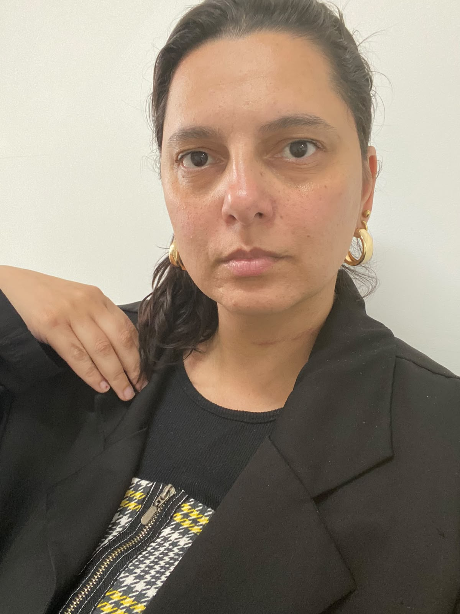

Administração
Organização documental, planilhas, controle de informações, gestão de processos e rotinas administrativas.
PORTFÓLIO
Minha trajetória reúne experiências em tecnologia, Recursos Humanos e administração. Aqui compartilho meus conhecimentos, projetos e aprendizados.
Conheça meus projetos
MINHA HISTÓRIA
Sou formada em Tecnologia em Processos Gerenciais pela UniRitter e construí uma trajetória profissional que reúne diferentes áreas de conhecimento.
Atuei com desenvolvimento de aplicações web, rotinas administrativas e processos de Recursos Humanos. Essas experiências ampliaram minha visão sobre tecnologia, organização e colaboração entre equipes.
Gosto de aprender, enfrentar novos desafios e desenvolver conhecimentos que contribuam para meu crescimento pessoal e profissional.
CONHECIMENTOS
CONHECIMENTOS
Organização documental, planilhas, controle de informações, gestão de processos e rotinas administrativas.
Processos admissionais, cadastro de colaboradores, conferência de documentos, recrutamento, seleção e atendimento.
HTML, CSS, JavaScript, Angular, AngularJS, React, Next.js, Node.js e Python.
Figma, prototipagem, wireframes, Design System, pesquisa com usuários, usabilidade e acessibilidade.
MEU TRABALHO
Repositórios com projetos e estudos na área de desenvolvimento de software.
Conhecer repositórios →Outros trabalhos e projetos desenvolvidos ao longo da minha trajetória.
Ver trabalhos →TRAJETÓRIA PROFISSIONAL
Apoio aos processos de admissão, cadastro de funcionários, controle de documentos admissionais, benefícios e atendimento aos colaboradores.
Desenvolvimento e manutenção de aplicações web utilizando AngularJS, Angular, HTML, CSS e JavaScript. Participação em projetos digitais e melhorias de produtos.
Apoio às atividades de auditoria, organização de documentos, atualização de planilhas e suporte às demandas internas.
Apoio às rotinas administrativas, organização de documentos, controle de informações e suporte às demandas internas.
APRENDIZADO CONTÍNUO
UniRitter
2015 – 2018SCTEC
Em andamentoItaú
UX Conecta e trilha Koru / Grupo Boticário.
VAMOS NOS CONECTAR?
Conheça meus trabalhos e acompanhe minha trajetória.